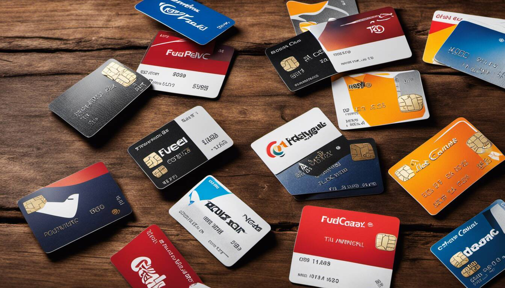

In a world continuously evolving towards smarter fiscal management, fuel cards have emerged as powerful tools in streamlining transportation expenses. However, not all are created equal and knowing your way around this labyrinth can make all the difference to your bottom line. In our recent quest, we've sorted, dissected, and compared an array of fuel cards to bring you a comprehensive guide, helping you to select "the best" that fits your specific needs. Prepare for skyrocketing savings as we journey into the realm of the best types of fuel cards: A comparison like no other!
There are three main types of fuel cards, including branded cards, fleet cards, and universal cards. Branded cards are typically associated with a specific gas station chain and offer discounts or rewards for purchases made at those locations. Fleet cards are designed for businesses with multiple vehicles and allow fleet managers to track expenses and control spending. Universal cards can be used at most gas stations and offer flexibility in terms of where they can be used. Each type has its pros and cons, and businesses will benefit from different card offers depending on their needs.

When considering a fuel card for your business vehicle fleet, it's essential to understand the distinction between branded and unbranded fuel cards. Branded fuel cards are typically offered by major oil companies, such as ExxonMobil or Shell, and can only be used at their respective affiliated stations. On the other hand, unbranded fuel cards are issued by independent providers and offer more flexibility as they can be used at various fueling stations.
Branded fuel cards come with the advantage of being widely accepted within the network of their affiliated stations. This means access to a vast number of locations where drivers can conveniently refuel. Additionally, some branded cards offer additional benefits like discounts on fuel purchases or reward programs tailored specifically for businesses.
However, the primary drawback of branded fuel cards is the limited acceptance at only affiliated stations. This can limit flexibility when planning routes that may not have affiliated stations in close proximity. Furthermore, pricing may be higher at these branded stations compared to independent fueling stations.
Unbranded fuel cards, on the other hand, provide much greater freedom in terms of where they can be used. They allow drivers to choose from a wider range of fueling station options across different brands and locations. This flexibility becomes particularly advantageous for long-haul trucking businesses that require broader coverage.
For instance, imagine you run a delivery service that operates nationwide. While branded fuel cards may work well for local operations where affiliated stations are abundant, unbranded cards would give your drivers the ability to fuel up at various locations across different states, preventing them from being constrained to specific brand-based networks.
That being said, it's crucial to consider factors beyond acceptance when evaluating branded vs. unbranded fuel cards. Each type has its own features and distinctions that need to align with your specific business needs.
Now that we have explored the differences between branded and unbranded fuel cards, let's delve into the key distinctions and features to consider when selecting a fuel card for your business.
When comparing different fuel card options, several key distinctions and features should be taken into account to ensure you choose the right fit for your business. Some of the essential aspects to consider include:
For example, imagine you manage a growing trucking fleet with multiple drivers on various routes. Having access to robust financial tracking and fuel analytics would enable you to closely monitor driver spending, identify opportunities for cost savings or route optimization, and ensure efficient allocation of resources.
By considering these key distinctions and features during your evaluation process, you can make an informed decision regarding the most suitable fuel card for your business needs.
When it comes to selecting the best fuel card provider for your business, it's essential to consider factors such as network acceptance, customer service, security measures, and additional features that align with your specific needs. While several providers exist in the market, here we highlight some of the top fuel card providers known for their robust offerings.
One highly regarded fuel card provider is NASTC Fleet One. They offer a discount of 0.05 cents above cost at all TA/Petro locations, making it an attractive option for businesses that frequently use these fueling stations. In addition, NASTC Fleet One provides the Mudflap app, which offers even cheaper fuel prices at independent truck stops.
Another notable player in the industry is TCS. While they charge a monthly fee of $10, TCS provides backup discounts for refueling and offers the added convenience of using the card for lumpers – individuals who assist with loading and unloading cargo. This versatility makes TCS a preferred choice for businesses looking for comprehensive fuel card solutions.
Truck operators have also praised TruckSmarter for its unique offering of 2% factoring combined with a 1% cashback debit card. This attractive feature seamlessly integrates financing options while providing savings on fuel expenses.
Moving forward, let's explore an overview of the leading services offered by these providers and other top contenders in the industry.
To make an informed decision about which fuel card provider suits your business needs best, it's important to have an understanding of the leading services offered by various companies.
NASTC Fleet One, as mentioned earlier, stands out with its competitive discounts at TA/Petro locations and cheaper rates through the Mudflap app. This broad network acceptance enables businesses to find fueling options across a wide range of locations.
On the other hand, TCS goes beyond fuel savings by allowing users to pay for additional services such as lumpers. This consolidation of expenses and convenient account management sets TCS apart in the industry.
Another reputable player is TruckSmarter, providing the convenience of factoring services combined with cashback rewards on fuel purchases. This integrated approach helps streamline financial management while maximizing savings for fleet owners.
In addition to these top contenders, various other fuel card providers cater to different business requirements. For instance, Trucker Advantage from OOIDA offers a 14 cent per gallon discount at major fueling stations like TA, Pilot, and Love's but also provides discounts at smaller local fuel stops. And EFS, known for its strong discounts, thrives in serving fleets rather than single-truck owners.
With an understanding of the top providers and their key features, it becomes easier to navigate the world of fuel card options and select the one that aligns best with your business goals and needs.
Fuel cards have become an invaluable tool for businesses with fleets, providing several benefits that can streamline operations and improve overall efficiency. Let's explore some of the key advantages of using business fuel cards.
One significant benefit is the financial tracking capabilities that fuel cards offer. With traditional payment methods like cash or credit cards, it can be challenging to accurately track fuel expenses and reconcile them with other business records. But fuel cards provide detailed transaction reports, allowing fleet managers to monitor spending in real-time and gain insights into driver behavior.
Imagine the ease of being able to access data on fuel purchases, including the date, time, location, and amount spent, all conveniently available through an online account dashboard. This level of visibility allows for better budget management by identifying any abnormal spending patterns or potential fraud.
Another advantage is the array of time-saving tools that come with many business fuel card programs. These tools can simplify administrative tasks such as generating expense reports or managing receipts. Instead of manually collecting and inputting data, fleet managers can leverage software integrations to automate these processes.
Efficiency can also be enhanced through the ability to set purchase restrictions on fuel cards. Fleet managers can customize spending limits per transaction or per day, ensuring that drivers stay within budgetary constraints and discouraging unauthorized use. This control reduces the risk of overspending and helps maintain financial discipline within the organization.
Moreover, business fuel cards often come with additional features like driver identification systems. These systems require drivers to enter a unique PIN or swipe their card before refueling, preventing unauthorized individuals from accessing fuel services. Such security measures help prevent fraudulent activity and ensure only authorized employees benefit from the company's resources.
For instance, let's say a delivery company utilizes a business fuel card system. If one of their drivers misplaces their card or someone attempts to use a stolen card, the identification system acts as a security checkpoint, preventing illicit fuel usage. This not only protects the company's assets but also reduces potential losses and operational disruptions.
In essence, business fuel cards offer financial tracking, time-saving tools, purchase restrictions, and enhanced security measures. These benefits empower fleet managers to maintain control over their fuel expenses and improve overall operational efficiency.
Now that we have explored the benefits of business fuel cards, let's dive into another important aspect: expenditure control and reward programs offered by some card providers.
Gain control over your fuel expenses while reaping additional benefits through expenditure control and reward programs offered by certain fuel card providers. These programs are designed to incentivize responsible spending and provide opportunities for businesses to save money or earn rewards.
Most fuel card providers enable fleet managers to set spending limits and controls on each card issued to their drivers. By implementing such measures, companies can mitigate unauthorized spending and ensure compliance with budgetary constraints. This level of expenditure control helps prevent overspending or misuse of company resources, ultimately leading to cost savings.
For instance, if a business sets a daily spending limit of $100 per driver on fuel purchases, any attempted transactions above this threshold would be declined. This prevents drivers from exceeding their allotted fuel budgets or making unnecessary purchases.
In addition to expenditure control, many fuel card providers offer reward programs that allow businesses to earn cashback or receive discounts on fuel purchases. These rewards can translate into significant savings over time. Some providers even partner with specific gas stations or service networks, providing access to discounted rates at affiliated locations.
Think of these reward programs as frequent flyer miles for your fleet. Just like accumulating points allows you to enjoy various perks when traveling, accumulating rewards through fuel card usage grants you financial benefits like reduced costs or additional cashback.
By leveraging such reward programs, businesses can reduce their overall fuel expenses, improve cash flow, and potentially invest the saved funds in other areas of their operations.
Having explored the benefits of expenditure control and reward programs offered by fuel card providers, we have gained insights into how these offerings can contribute to cost savings for businesses. It is essential to consider these aspects when selecting the most suitable fuel card for your fleet's needs.
When it comes to selecting the most suitable fuel card for your business, it's crucial to consider a variety of factors that align with your specific needs and goals. Each fuel card provider may offer different benefits and features, so taking the time to evaluate these options can save you money and streamline your fuel purchasing process in the long run.
One important factor to consider is the discounts offered by the fuel card provider. Different providers may have varying agreements with fuel stations, resulting in different discount rates for fuel purchases. Some cards may offer a percentage discount off pump prices, while others provide volume-based discounts. Assess your fleet's fuel consumption patterns and determine which type of discount would be most beneficial for your business.
For instance, if you operate a large fleet and regularly purchase significant volumes of fuel, a volume-based discount might be more advantageous for your business. On the other hand, if your fleet is smaller and consumes less fuel overall, a percentage-based discount could be more cost-effective.
Another consideration is the coverage provided by the fuel card. Ensure that the card is accepted at the fueling stations that are convenient for your business operations. Check if the card is widely accepted across a network of stations or limited to specific brands or regions. This information will help you determine if the fuel card will meet your needs when it comes to accessing fuel conveniently.
In addition to discounts and coverage, additional benefits offered by the fuel card provider should also be evaluated. Some cards provide added perks such as vehicle maintenance discounts, truck or car wash discounts, retail discounts, or even roadside assistance programs. These extra benefits can add value to your fleet operations and contribute to overall cost savings.
Lastly, consider the reporting capabilities provided by the fuel card. Efficiently tracking and monitoring your fleet's fuel usage is essential for financial planning and analysis. Look into whether the fuel card offers detailed reporting features that allow you to track fuel expenses, generate reports for IFTA reporting, and monitor your overall fuel usage trends. These tracking and reporting capabilities will enhance your ability to manage your fleet's fuel consumption effectively.
Now that we've explored the factors to consider when selecting a fuel card, let's dive into the specific considerations businesses should keep in mind when evaluating their options.
For businesses, selecting the most suitable fuel card goes beyond individual preferences. Considerations specific to businesses include fleet size requirements and security features. Some fuel cards may have minimum spending requirements or work better with larger fleets, making it crucial to find a card that aligns with your specific needs.
For example, if you operate a smaller fleet, it might be more challenging to meet minimum spending requirements associated with certain fuel cards. In such cases, it's essential to find a card that offers flexibility and accommodates the size of your fleet without imposing financial burdens.
Security features are paramount when it comes to protecting your business against fraudulent activities and unauthorized transactions. Look into the security measures implemented by the fuel card provider, such as PIN protection and real-time transaction monitoring. A secure fuel card will give you peace of mind knowing that your fuel purchases are safe and protected from potential misuse.
Just like choosing a fleet management system or any other aspect of your business operations, selecting the most suitable fuel card requires careful evaluation and consideration of various factors that impact your business directly.